I've seen too many companies jump right in, drawing up layout plans, selecting equipment, and setting production cycles, working themselves to the bone. Then, once the equipment arrives, they discover cell specifications have changed, the process flow is incompatible, logistics are blocked, testing capabilities are insufficient, and safety designs are flawed…
PACK line planning isn't just about drawing a few diagrams and buying a bunch of equipment. It's a systems engineering project involving seven major issues: product, process, logistics, quality, safety, flexibility and digitalization, and personnel. Below, I'll break down these seven issues, telling you about the key decision points and the most common pitfalls. You must understand these seven questions before you start. Failing to thoroughly understand any one of them will lead to costly mistakes later.
Question 1: What is your Product Positioning?
— Cell specifications, customer focus, and production capacity targets
This is the most fundamental issue, and also the one most easily overlooked. Energy storage packs are different from power packs, large-scale energy storage packs differ from commercial and industrial energy storage packs, and power packs are significantly different from small-scale power packs. Generally speaking, power packs and large-scale energy storage packs are produced in larger batches, have fewer models, and are highly automated; however, commercial and industrial energy storage packs and small-scale power packs are generally produced in smaller batches, have more models, and are highly customized. If your product strategy is vague or undefined, you're likely to suffer losses.
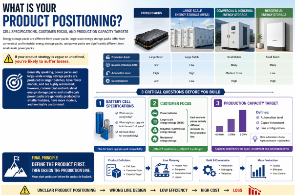
Suggestion
Before construction begins, these three issues must be clearly defined:
1. Battery cell specifications: What are currently used? What might be upgraded to in the next 1-2 years? (At least allow for compatibility)
2. Customer focus: Are you targeting power batteries, large-scale energy storage, industrial/commercial energy storage, or residential energy storage? Different scenarios place entirely different demands on the production line.
3. Production capacity target: Is it 0.5GWh, 2GWh, or 5GWh per year? Production capacity determines the level of automation and investment scale of the production line. Please remember, higher automation levels are not always better; the most suitable level is the best.
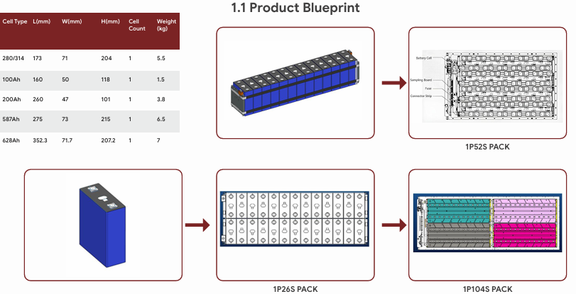
In short: define the product first, then the production line. Never start production before the product is finalized.
Question 2: Has the process route been determined? — Laser welding is the biggest hurdle.
Generally speaking, the core process of a battery pack is cell stacking → tab welding/laser welding → busbar connection → module testing → PACK assembly → airtightness testing → final testing. Among these, laser welding, adhesive application and curing during the process, and airtightness testing are often the most prone to problems.
1. Laser welding – the most critical of all, the biggest hurdle. The stability of the weld directly affects the safety of the product during use. Incomplete welds can easily cause serious accidents, but weld quality problems are the most difficult to detect.
2. Adhesive Application and Curing – Directly Affecting Lifespan. The mixing ratio, temperature, humidity, and curing time of structural adhesives/thermal conductive adhesives must be strictly controlled. Substandard environmental conditions can lead to debonding, cracking, leakage, and heat dissipation failure.
3. Airtightness Testing – The Lifeline of Pack Quality. The accuracy of helium testing, tooling sealing design, and connector structure directly determine the pass rate. Poor tooling design can lead to false leaks, misjudgments, and repeated rework.
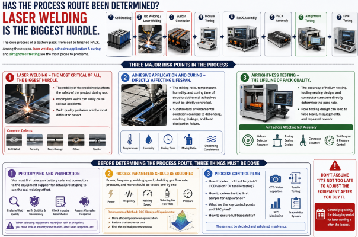
Suggestion
Before determining the process route, three things must be done:
1. Prototyping and verification: You must first take your battery cells and connectors to the equipment supplier for actual prototyping to see the real welding effect. When selecting equipment, never just look at the price; you must look at industry case studies, after-sales response, etc.
2. Process parameters should be solidified: power, frequency, welding speed, shielding gas flow rate, pressure, and tested one by one (it is best to conduct experiments using DOE to improve efficiency and reduce costs) to find the optimal window.
3. Process control plan: How to detect cold solder joints? CCD vision? Or tensile testing? How to determine the limit sample for appearance? ... These must be decided in advance.
Don't assume that "it's not too late to adjust the equipment after you buy it." Generally speaking, the debugging period for laser welding is often the longest.
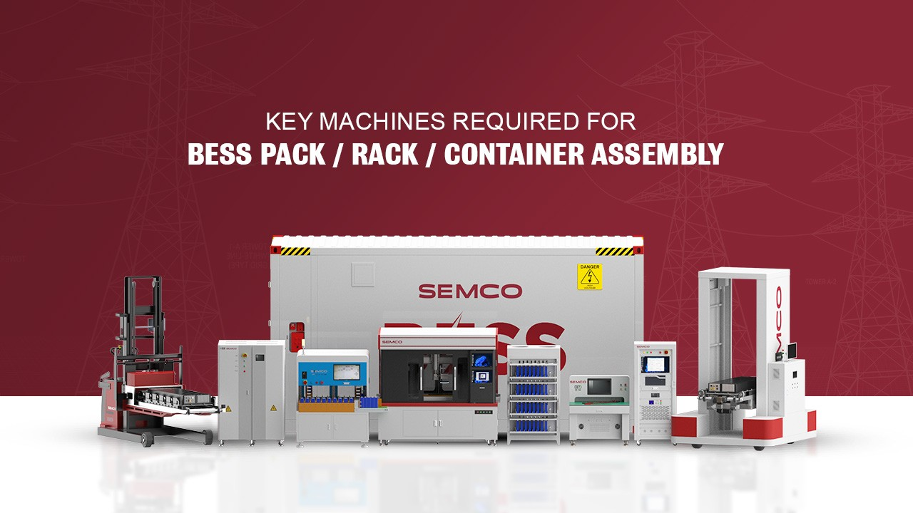
Question 3: How does the logistics work? — Many people only draw the equipment, not the materials.
When planning a production line, many people only focus on the equipment layout, forgetting how materials arrive and how finished products move. As a result, once the production line is up and running, materials pile up like mountains, forklifts are running around everywhere, and efficiency is low.
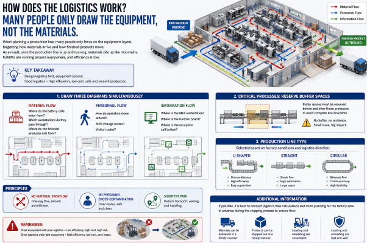
Suggestion
1. When drawing the layout diagram, draw three diagrams simultaneously (or draw the material flow, personnel flow, and information flow diagrams on the same diagram):
- Material flow: Where do the battery cells enter from? Which workstations do they pass through? Where do the finished products exit from?
- Personnel flow: How do operators move around? Shift change routes? Visitor routes?
- Information flow: Where is the MES workstation? Where is the Kanban board? Where is the exception call button?
2. Critical processes: Buffer spaces must be reserved before and after these processes to avoid complete line downtime.
3. Production line type: (U-shaped, straight, circular) selected based on factory conditions and logistics direction.
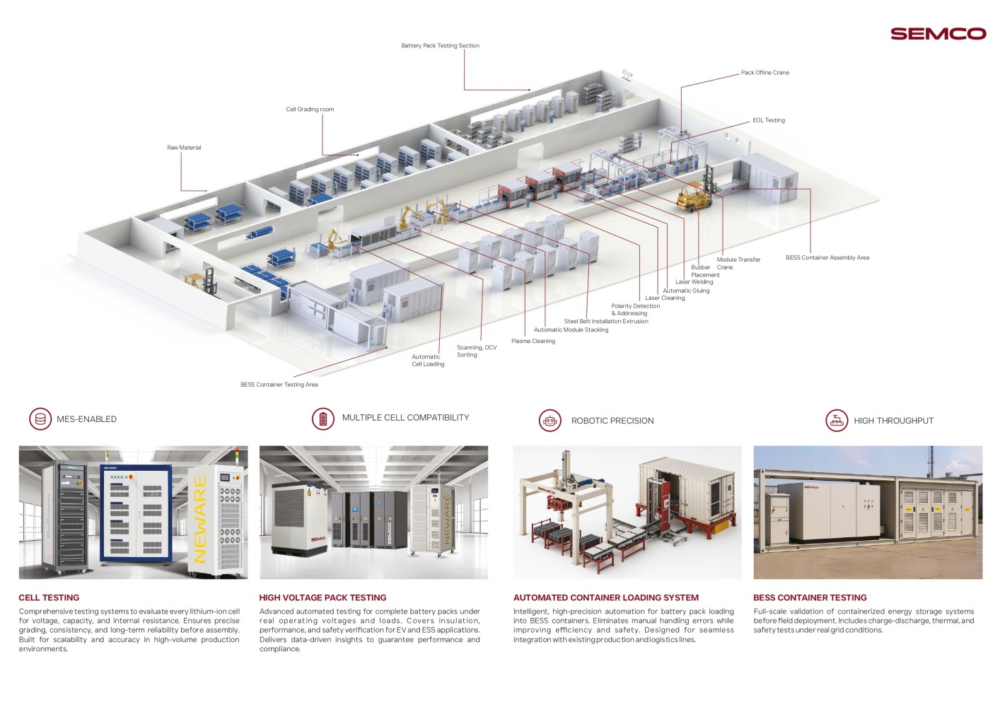
Principles: No material backflow, no personnel cross-contamination, and the shortest path.
Additional information: If possible, it is best to conduct logistics flow calculations and route planning for the factory area in advance during the shipping process to ensure that materials can be delivered in a timely manner and products can be shipped out in a timely manner, and that loading and unloading are convenient, fast and safe.
Question 4: Is the testing capability sufficient? — Energy storage PACK testing is more complex than power testing.
PACK testing includes insulation withstand voltage, capacity testing, BMS communication, equalization function, airtightness testing, EOL testing, aging testing, etc.
Special note: Bottlenecks in the pack production line are usually in the following areas: airtightness, end-of-life (EOL) testing, and aging. If the testing equipment's cycle time is insufficient, even if the preceding assembly is fast, it will be useless and will cause significant line blockage.
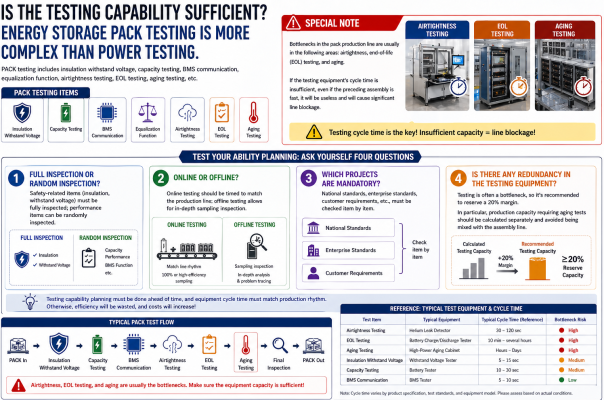
Suggestion
Test your ability planning; ask yourself four questions:
1. Full inspection or random inspection? Safety-related items (insulation, withstand voltage) must be fully inspected; performance items can be randomly inspected.
2. Online or offline? Online testing should be timed to match the production line; offline testing allows for in-depth sampling inspection.
3. Which projects are mandatory? National standards, enterprise standards, customer requirements, etc., must be checked item by item.
4. Is there any redundancy in the testing equipment? Testing is often a bottleneck, so it's recommended to reserve a 20% margin. In particular, production capacity requiring aging tests should be calculated separately and avoided being mixed with the assembly line.
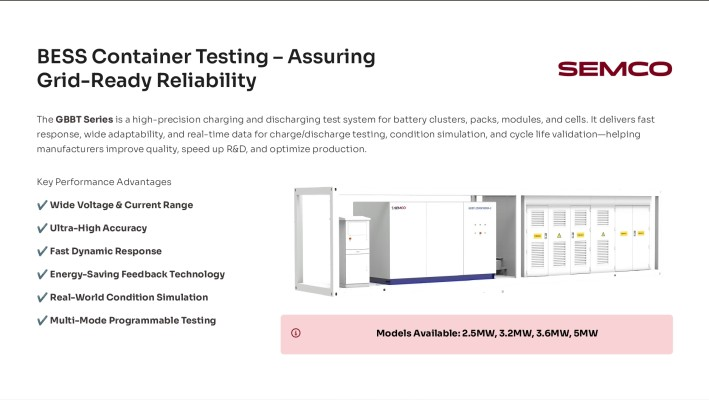
Question 5: Do the high-voltage safety and fire protection standards meet the requirements?
High-voltage safety is absolutely non-negotiable. This isn't a matter of cost; it's a matter of life and death. Never cut corners on safety design. I've seen a factory's production line fail because it lacked insulation monitoring; a battery pack with an internal short circuit entered the market, causing a fire and resulting in devastating losses.
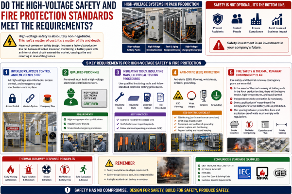
Suggestion
1. All high-voltage area interlocks, access control, and emergency stop mechanisms are in place.
2. Personnel must hold a high-voltage electrician certificate to work.
3. Insulating tools, insulating mats, electrical testing procedures
4. Anti-static (ESD): Flooring, wrist straps, ionizers, grounding
5. Fire safety and thermal runaway contingency plans are essential: In the event of thermal runaway of battery cells in the Pack production line, there will be heavy smoke, high temperatures, and rapid spread. Independent smoke extraction is mandatory; direct application of water-based fire extinguishers to the battery cells is prohibited; and the spacing between production lines and explosion-proof walls must comply with regulations.
Question 6: Are Flexibility and Digitalization Sufficient? — Future Oriented Capabilities
The new energy industry is changing rapidly. For example, in the energy storage industry, today's 280Ah/314Ah batteries might be replaced by 587Ah batteries tomorrow; today's air-cooled batteries might be replaced by liquid-cooled batteries tomorrow. If your production line needs a week to change models, customer orders may have already been lost. At the same time, customer requirements for product traceability are almost standard (traceability is mandatory for automotive batteries), so digital traceability must be planned and implemented from the very beginning.
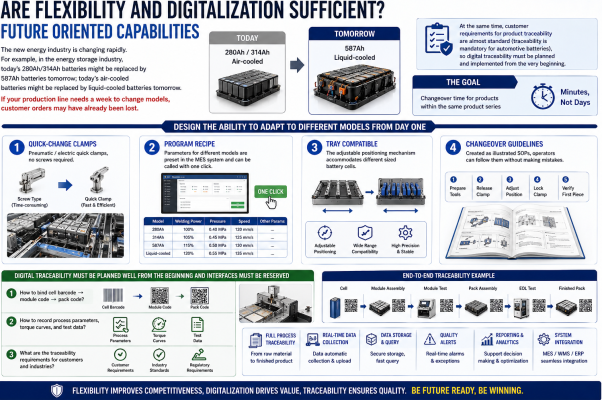
Suggestion
The ability to adapt to different models should be designed in from day one:
1. Quick-change clamps: pneumatic/electric quick clamps, no screws required.
2. Program recipe: Parameters for different models are preset in the MES system and can be called with one click.
3. Tray compatible: The adjustable positioning mechanism accommodates different sized battery cells.
4. Changeover Guidelines: Created as illustrated SOPs, operators can follow them without making mistakes.
The goal is: changeover time for products within the same product series
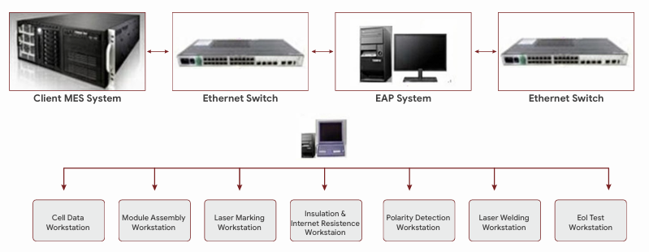
At the same time, digital traceability must be planned well from the beginning and interfaces must be reserved:
1. How to bind cell barcode → module code → pack code?
2. How to record process parameters, torque curves, and test data?
What are the traceability requirements for customers and industries?
Question 7: People and Organization Issues (Last but equally important)
Many companies focus their PACK line planning on equipment, processes, and layout, with some bosses thinking, "We can just hire people when the time comes." The result is that once the equipment arrives, they don't even have a process engineer who knows how to operate it. This is a fatal misconception. Equipment can be bought, processes can be adjusted, but if you can't find the right people, the production line is just a pile of scrap metal. I've seen too many projects where equipment is brought in, but no one knows how to adjust it; the production line is up and running but no one knows how to manage it; and when quality problems arise, no one can analyze them.
Suggestion
1. Key personnel must be in place in advance, and the order of appointment must be precise.
My suggested order:
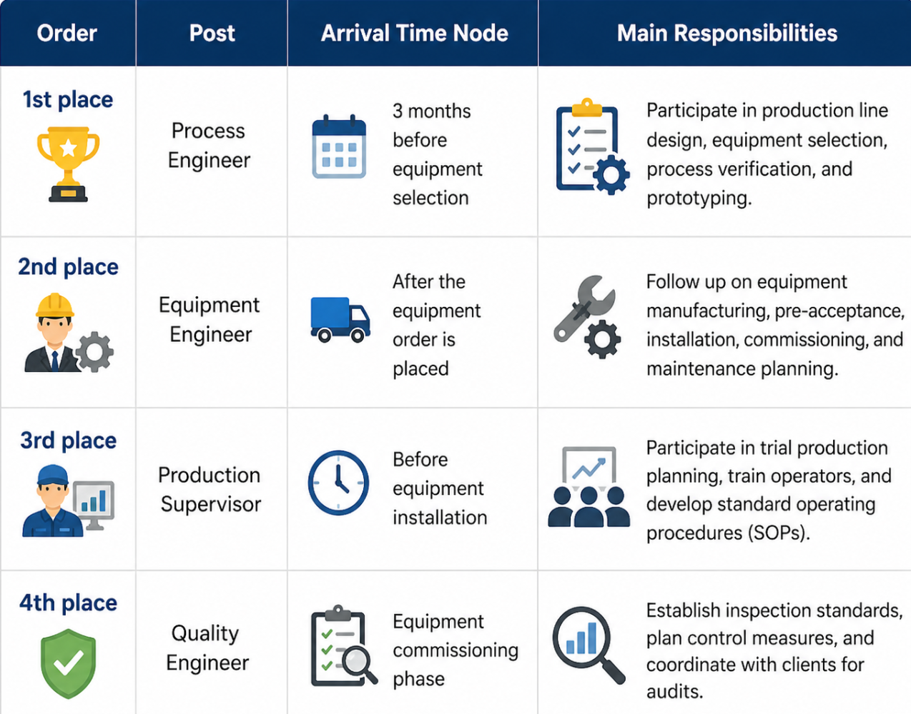
2. Skills and qualifications: It's not just about having a certificate; it's about actually being able to do the job.
3. Training system: It cannot be a mere formality; it must form a closed loop.
4. Personnel turnover: Prepare backup plans in advance
5. Organizational structure: Don't make it too complicated, but make sure responsibilities are clear.
How Semco Infratech Can Help You Avoid These Mistakes
At Semco Infratech, we don’t just supply equipment—we act as your end-to-end technical partner, ensuring that every one of these 7 questions is answered before you commit capital.
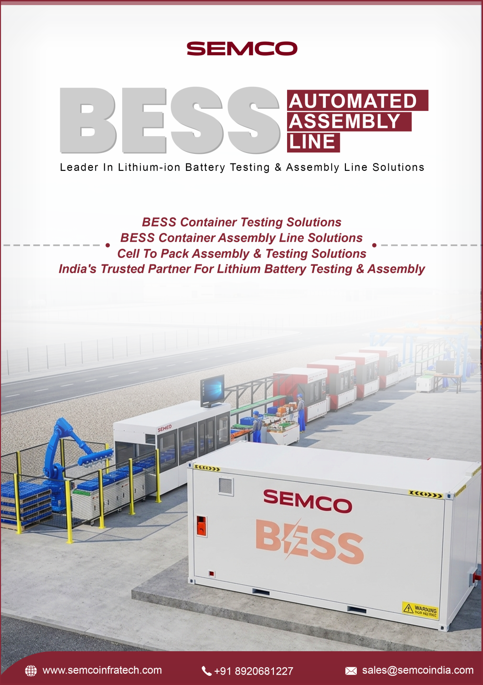
Semco Infratech acts as your end-to-end partner to eliminate these risks:
- Product & Capacity Planning – Future-ready designs (280Ah → 587Ah) with scalable GWh-level planning
- Process Validation – Proven welding, airtightness & testing solutions with real-world validation
- Layout & Logistics – Optimized material flow + AGV-based smart factory design
- Testing Infrastructure – Integrated EOL, aging & high-efficiency testing systems (no bottlenecks)
- Safety & Compliance – CEA, NFPA, UL-aligned BESS safety architecture
- Automation & Digitalization – MES-driven traceability + flexible, quick-change lines
- Execution & Support – Training, commissioning & long-term AMC support
In short: We don’t just supply equipment—we ensure your factory runs efficiently from Day1

Contact Semco Infratech to discuss your BESS manufacturing requirements and discover how automatic assembly solutions can enhance your production efficiency, ensure product quality, and accelerate your path to market competitiveness.
For demos, solutions, or collaborations:
Connect at sales@semcoindia.com | +91-8920681227 | www.semcoinfratech.com
Conclusion
Planning an energy storage PACK production line is not simply a matter of drawing a few diagrams and buying a bunch of equipment. It's a systematic project: Planning a PACK production line = Determining product processes → Calculating production capacity and cycle time → Laying out logistics → Selecting equipment → Focusing on quality control points → Ensuring high-voltage safety → Implementing digital traceability → Allowing for flexible expansion.